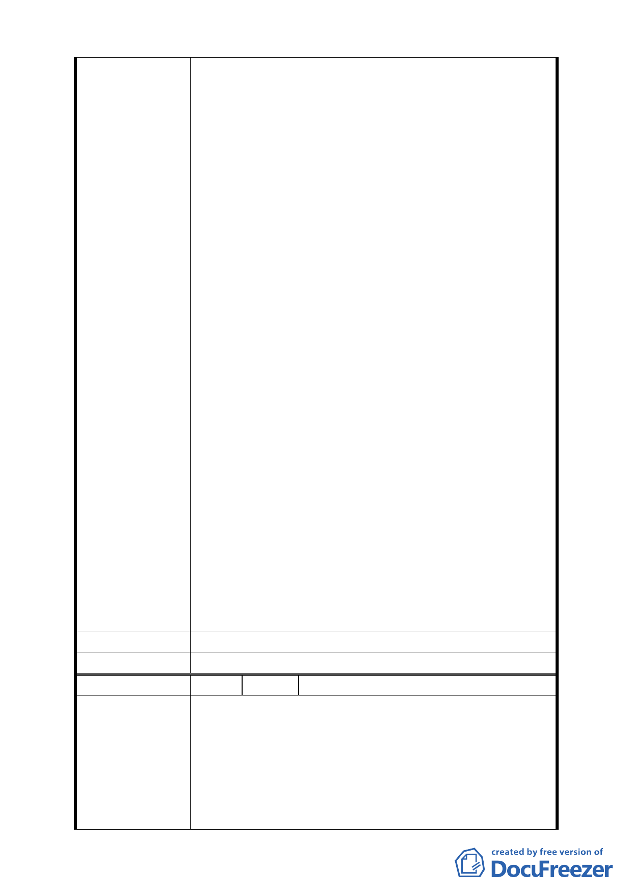

22 日公展完成。
二、據「都委會」民國 99 年 3 月 22 日第 609 次都市計
畫委員會審議，會議結論稱：由市府都委會委員組
成專案小組續審，併案檢討「金泰段臺北好好看開
發案」、臺北市「基隆河 (中山橋至成美橋段) 附
近地區土地使用分區與都市設計管制要點」( 北段
地區〉計畫案(下稱「大灣北段通檢計畫」) 使得
進行實質審查作業；惟「金泰段臺北好好看開發案」
自民國 97 年 10 月迄今歷經年餘反覆研擬、檢討獲
致共識後，始依「都發局」表訂版本送件審查，今
如須併「大灣北段通檢計畫」始得實質審查，不免
令陳情人等憂慮：
(一)「大灣北段通檢計畫」進程繁複，其結論又將牽動
「金泰段臺北好好看開發案」內容，如此一來，歷
經年餘之討論折衝豈非俱付東流？送審時程又恐
將遙遙無期。
(二)「促進都市再生2010年臺北好好看」開發計畫案尚
有領取建築執照及開工時程限制，如依是項併案檢
討結論執行，勢必無法符合上揭時程限制，衍生之
損失將難以估計。
三、陳情人等再次表明立場如下：
（一）陳情人等願支持市府政策並依市府認可方案設計
規劃、施工。
（二)現將已形成共識之「金泰段臺北好好看開發案」與
尚待縝密檢討之「大灣北段通檢計畫」脫鉤並從速
審查。
（三）北市都規字第 09836521507 號函認可之都市變更
計畫中所提99年3月31日前取得建照事，囿於現今
情事實無法達成，陳請 鈞局予以取消設限。
建 議 辦 法 （同上）
委 員 會 決 議 所提建議業已錄案供委員審議參考。
編 號 5 陳情人 奇泰建設有限公司等 6 家
一、有關「金泰段臺北好好看開發案」陳情人等已悉依
臺北市政府都市發展局(以下簡稱「都發局」) 都市
計畫委員會「修正臺北市「基隆河 ( 中山橋至成美
陳 情 理 由 橋段 ) 附近地區土地使用分區與都市設計管制要
點」(北段地區)計畫案」第594次大會及2次座談會
討論結果，並配合都發局98年9月14日北市都規字第
098352214500 號函檢附之土地使用管制要點草
- 44 -